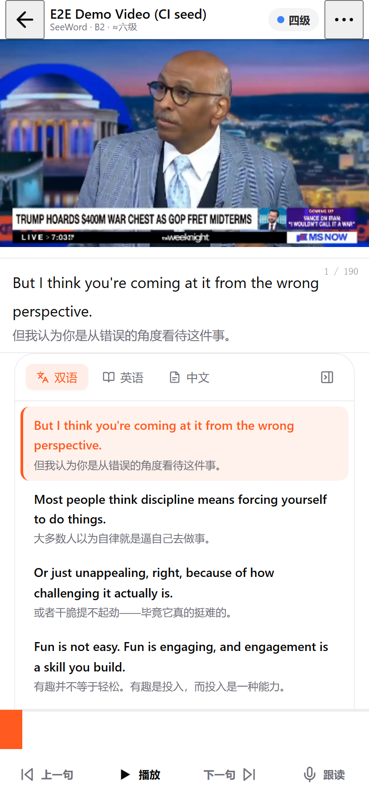
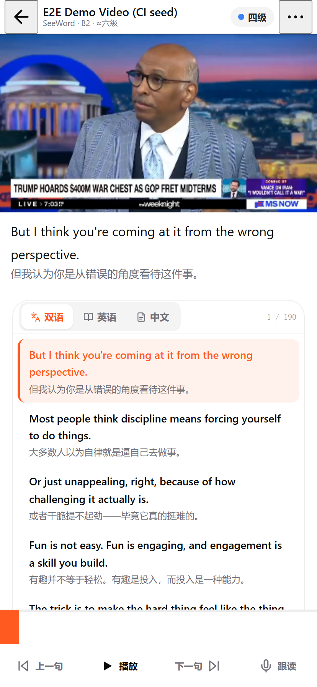
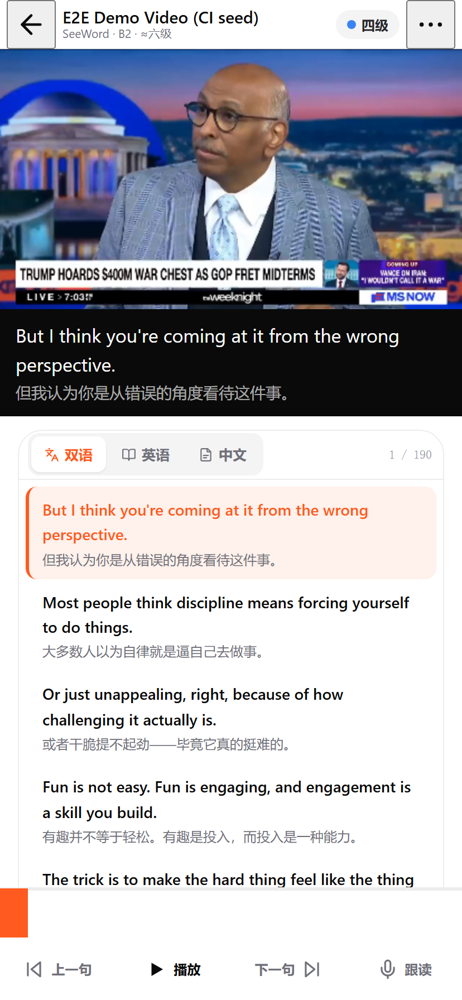
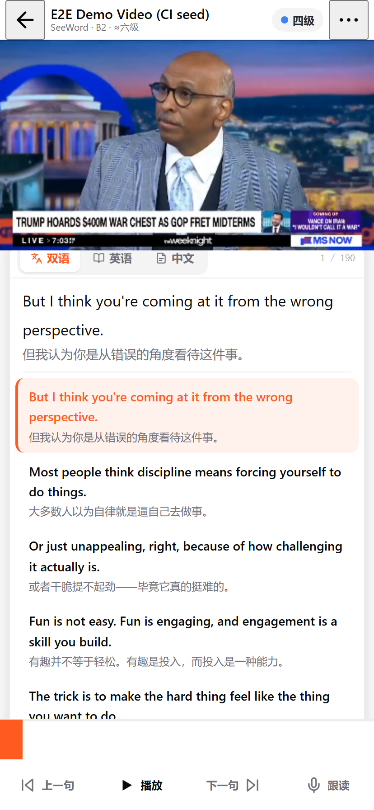
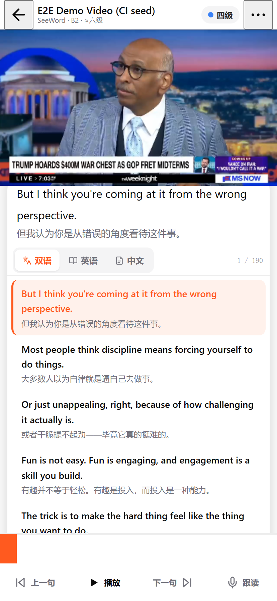

两个抱怨：① 画框与当前句卡的边界很突兀（用户确认指这两者）；②「双语 / 英语 / 中文 + 折叠键」那一行割裂上下文 ——
从画面下面的字幕到整段字幕稿，中间像被切了一刀。
七屏都按 414×896 渲染（@2x），壳与底栏按线上实测尺寸复刻（顶栏 44 · 画框 414×232.9 · 底栏 101 = 44+56+1）；
数据是本地库里那条视频的真实前 5 句，画面是从 app-shots/14-414-first-screen.png 裁下来的真实帧。
每个数字都来自 getBoundingClientRect()（_reading-shots.js）。
| 约束 | 原文（摘） | 它钉住什么 |
|---|---|---|
卡与画框左右同槽mobile-current-sentence-card.spec.ts:152-156 |
|card.x − frame.x| ≤ 2、|card.width − frame.width| ≤ 2 |
当前句卡必须与画框同 x、同宽（出血）：内缩或加外边距就红 |
卡顶贴画框下沿mobile-inline-subtitle.spec.ts:113-114 + mobile-current-sentence-card:157-162 |
card.y ≥ frameBottom − 1、card.y ≤ frameBottom + 16（另一条给到 +24） |
卡顶与画框下沿的间距只能 0…16px：齐平可以，被包进一张更靠下的面（＋31px）就红 |
露出画面 ≥120pxmobile-player-shell.spec.ts:169 |
card.y − frame.y ≥ 120 |
画框之上不许再加东西（首屏预算） |
卡内下 1/5 不许放控件mobile-current-sentence-card.spec.ts:232 |
点卡内 (75%, 80%) 那个点：不是词热区、不弹词卡，只有「播放/暂停」 |
把模式行塞进卡里会正好压在这个点上 → 红 |
计数在卡里且全页唯一mobile-current-sentence-card:173 · mobile-inline-subtitle:171 · watch.spec.ts:106-116 |
${CARD} [data-testid="subtitle-counter"] 可见；getByTestId 严格模式；文本 n / total |
1 / 190 必须留在当前句卡内，且全页只有一份 |
模式行仍是 tablistwatch.spec.ts:45,78-90（1280 与手机档都跑） |
[role="tablist"] 可见；三个 [role="tab"] 标签「双语 / 英语 / 中文」；aria-selected |
模式控件可以换样式，但角色与标签不能换（可以顺带从 32px 补到 44px 触控） |
另有两条只跑桌面：折叠键 aria-label="收起为字幕轨"（repro-stage1.spec.ts:95-109）与 5 Tab 底栏的守卫 ——
所以折叠键在移动端删掉是安全的（移动端的窄轨态本来就没有任何 spec，而且它在 ≤1023px 下折成的竖轨并不能真的让出一列）。
| 路线 | 形态 | 画框下沿 276.9 | 当前句 | 模式开关在哪 | 文稿 | spec 代价 |
|---|---|---|---|---|---|---|
| R0 · 现状 | 12px 断层 + 出血直角带（上下两条 1px 边）+ 内缩圆角卡 | 断层 12px | 276.9–396.9 出血直角 + 全边框 |
396.9 起，卡内 3 chip + 折叠键，32px 高 |
396.9 起 · x=16 · r=22 | —（基线） |
| R5 · 齐平字幕带 ★ 推荐 |
当前句与画框齐平（0 断层、无外框、无底色差）；文稿另起一张卡，卡头就是模式行 | 0（齐平） | 276.9–378.9 x=0 w=414（= 画框） |
文稿卡头 390.9 44px 分段控件 + 计数 |
435.9 起 · x=16 · r=22 首屏 4 条 |
0 条 |
| R3 · 字幕带 备选 |
当前句归画面：深底白字字幕带紧贴画框下沿；文稿卡同 R5 | 0（同底色，无接缝） | 276.9–384.9 白字压深底 |
文稿卡头 385.9 44px 分段控件 + 计数 |
429.9 起 · x=16 · r=22 首屏 4 条 |
0 条（代价在配色，不在断言） |
| R4 · 最小改动 | 结构不动：当前句卡去边框去底色（仍 12px 断层），chip 行换 44px 分段控件、删折叠键 | 断层 12px | 288.9–397.9 | 卡头 398.9 · 44px | 442.9 起 · x=16 · r=22 | 0 条（但两个盒子与断层都还在） |
| R6 · 模式行入字幕带 | 在 R5 上把模式行搬进字幕带内部，文稿卡变纯列表 | 0（齐平） | 276.9–409.9（含模式行） | 卡内 365.9 · 40px | 421.9 起（卡纯列表） | 破 1 条：卡内 (75%,80%) 落在模式行上 |
| R1 · 贴合文稿面 | 「当前句 + 文稿」并成一张面，从画面下沿长出来（上搭 14px、圆角 20px），模式行做面头 | 面 262.9 起 （压进画面 14px） |
307.9 离画框 31px |
面头 263.9 · 44px | 411.9 起（同面） | 破 2 条 + INV-021 措辞 |
| R2 · 同面·句在前 | 与 R1 同面，只把顺序换成「当前句 → 模式行 → 文稿」（对照屏） | 面 262.9 起 | 263.9 越到画框下沿之上 |
366.9（仍夹在句子与文稿之间） | 410.9 起（同面） | 破 2 条 + INV-021 措辞 |
截图里那一套。三个盒子三套语言：出血直角白带（上下两条 1px 边）+ 内缩圆角卡，中间是 3 个 chip 加一个移动端没有对象的折叠键。

当前句带 276.9–396.9 → 文稿卡 396.9 起：两条边界线落在同一个 y。
单独打开 →当前句与画框齐平、去掉外框：画框与字幕之间不再有「第二条边」，字幕回到「画面这一块」；模式行成为文稿卡的卡头，文稿卡里是纯内容。零 spec 改动。

字幕带 276.9–378.9（x=0 w=414 = 画框，0 断层）· 文稿卡 390.9 起（12px 留白）· 卡头 44px 分段控件 + 计数 · 文稿 435.9 起，首屏 4 条。
单独打开 →换心智模型：当前句属于画面（深底白字，读作播放器字幕条），接缝彻底消失（同底色）；文稿卡同 R5。代价是把 surface-dark 变成了文字面，点词高亮的浅色底要在深色上重新校一遍。

播放器块 44–384.9（画框 + 108px 字幕带）· 文稿卡 384.9 起 · 首屏 4 条。零 spec 改动。
单独打开 →结构一动不动：只把当前句卡去边框去底色、chip 行换 44px 分段控件、删折叠键。比 R0 干净，但断层与两个盒子都还在。
当前句带 288.9–397.9（无边框）· 卡头 398.9 · 文稿 442.9。零 spec 改动。
单独打开 →在 R5 上再推一步：模式行搬进字幕带（与计数同一行），文稿卡变成纯列表 —— 句子与文稿之间再也没有控件。代价是卡内下 1/5 出现了控件，正好压住那条断言。
字幕块 276.9–409.9（含 40px 模式行）· 纯列表卡 421.9 起。破 1 条断言（改断言即可，改法写在下面）。
单独打开 →「当前句 + 文稿」并成一张面，从画面下沿长出来（圆角切进画面 14px），模式行做面头。视觉上最整体，但要动两条硬断言与 INV-021 的措辞。

面 262.9 起（x=10, r=20）· 面头 263.9 · 当前句 307.9（离画框 31px）· 文稿 411.9 起。
单独打开 →与 R1 同面，只换顺序。用来单独验证一件事：开关夹在句子与文稿之间时割裂感还在不在。

当前句 263.9（越到画框下沿之上）· 模式行 366.9 · 文稿 410.9。这一屏是 R1 的对照，不是候选。
单独打开 →panelCollapsed 折出的竖轨并不真的让出一列，而且 ≤1023px 下没有任何 spec 依赖它）；② 现在的 chip 行只有 32px 高、不到 44px 触控基线，换成分段控件正好补上。role=tablist —— 六条硬约束一条都不碰；而且比现状少 12px，首屏文稿从 4 条起。mobile-inline-subtitle:114）、卡与画框不同宽（破 mobile-current-sentence-card:152-156）、INV-021「直接位于画框之下」的措辞要改，并且按仓库规矩走一次 /decision-support 落 DEC。mobile-current-sentence-card:232 的取样点改成「模式行之上」，说清楚「卡内允许有一条工具行」。
静态图由 _reading-shots.js 生成（Playwright chromium，414×896 @2x，file:// 直开）：
cd docs/design/mobile/prototypes && node _reading-shots.js。
七个变体共用 _reading.css / _reading.js（壳、底栏、真实前 5 句都在这里），
差异只在各自的 HTML 结构 —— 横向差异只可能来自版式本身。